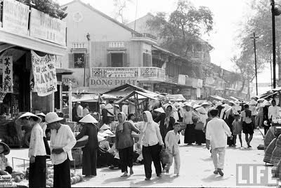
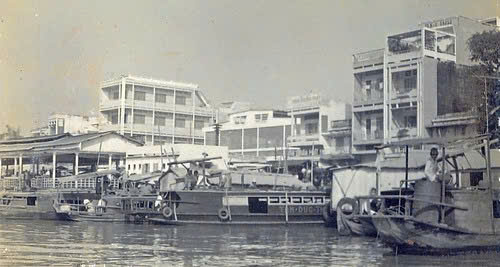
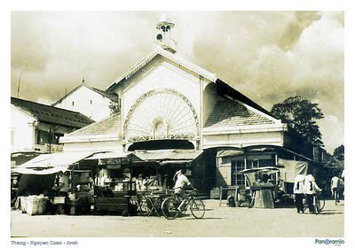
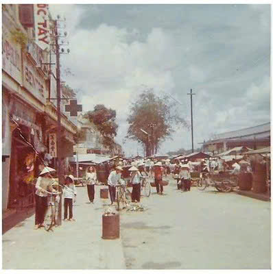

Giới Thiệu
Trước năm 2000, chợ Bến Tre là một khu chợ truyền thống với các gian hàng đơn sơ, chủ yếu bằng gỗ và mái tôn. Chợ là trung tâm giao thương quan trọng của tỉnh, nơi người dân trao đổi hàng hóa nông sản, hải sản và nhu yếu phẩm hàng ngày.
Không Khí Nhộn Nhịp
Chợ hoạt động từ sáng sớm với cảnh buôn bán nhộn nhịp, tiếng rao hàng vang khắp nơi. Những gánh hàng rong, xe đẩy bán bánh mì, hủ tiếu gõ là hình ảnh quen thuộc của chợ Bến Tre thời kỳ này.




Những Đặc Trưng
- Các sạp hàng nhỏ, bày bán trực tiếp trên vỉa hè.
- Chợ có nhiều quán ăn đặc sản miền Tây như bánh xèo, bún riêu, chè đậu.
- Không gian đơn giản, chưa có sự quy hoạch hiện đại.
- Hình ảnh xe thồ, đò dọc vận chuyển hàng hóa qua các kênh rạch.
- Chợ là nơi gặp gỡ, trao đổi văn hóa và kinh tế của người dân địa phương.
- Hàng hóa chủ yếu là nông sản, trái cây, cá đồng và thủ công mỹ nghệ.